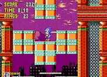

|

Review

Game Type: Side-view Platform
You play an extremely speedy hedgehog as he runs through levels filled
with loop-de-loops and other obstacles on his way to rescue his animal
friends from the malicious Dr. Robotnik.
Gameplay: 95/100
Astoundingly good. The feeling of speed this game creates is
incredible. I haven't tried to beat it in some time, I'm so busy
working to shave another second off my time to clear each level. The
original Sonic is better than its sequels for this; only 1 in 3 stages has
a boss, so the speed rush is never interrupted. The
controls are excellent; one button takes care of jumping, attacking,
everything. (They need to be simple. When racing along at high speed you'll
have only a split second to react if an enemy emerges off the side of the
screen.)
Graphics: 95/100
Sonic is more colorful than I thought was possible on a Genesis. The
character designs are cool. The parallax in the backgrounds is breathtaking
(especially in the Starlight zone). Animated very well.
Graphically impressive even when compared to most SNES games. And hey, the
animations when Sonic stands still... (Wasn't he the first to do so?)
Sound: 90/100
The cartoony sound effects are by no means impressive, but they are of
as high a quality as the Genesis can manage and are perfectly appropriate.
The tunes are highly addictive.
Overall: 95/100
Sonic is probably my favorite side-scroller of all time. (Or is it Sonic
2?) Not a lot of thought involved, but for a pure, undiluted adrenaline
rush (which is what I think games should be all about), Sonic simply can't
be beat.
Codes
- Stage Select
- ATS hold A and press U, D, L, R, Start.
- Control Mode
- ATS press U, C, D, C, L, C, R. During a game you can now pause and press
B for slow motion, C, for single frame advance, and A for a soft reset.
- Debug Mode
- Enter the Control Mode code above, and while still at the title screen,
hold A and press Start. Do not release A until the game begins. You can now
press B to enter and exit debug mode, A to select any obstacle in the level, and
C to place a copy of that item at your current location. Note: this trick
does not work on all Sonic the Hedgehog cartridges.
- Strange Demo Mode
- During the demo mode, press A, B, and C simultaneously, and Sonic will
lose his place in the preset pattern for the demo mode and begin acting
strangely.
|